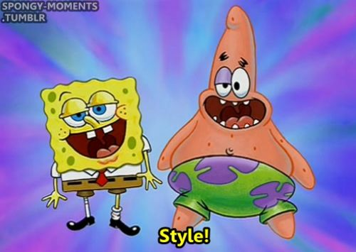

Style!
-
The h1 tag has its color set to blue with some transparency.
Sometimes I dream of cheese
-
The p tag has its color set to aqua, its font-size set to larger, and its font-stretch set to expanded.
Less style?
- The h2 tag has its color set to burlywood
- The select tag has an inline attribute of autofocus, which boldens the outline of it to draw your attention.
- The footer tag has its color set to crimson and its text-decoration set to underline overline wavy blue.